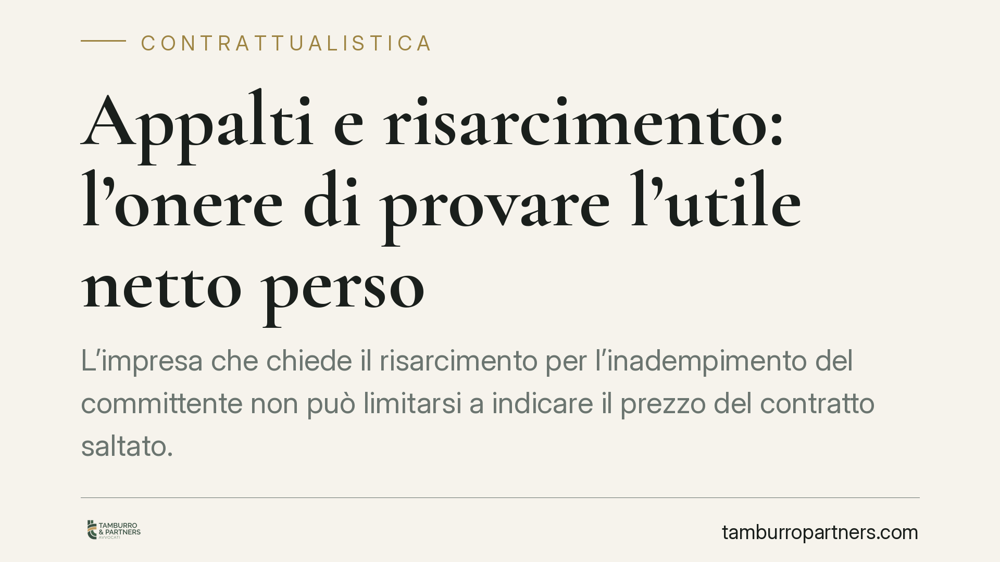
Appalti e risarcimento: l'onere di provare l'utile netto perso
L'impresa che chiede il risarcimento per l'inadempimento del committente non può limitarsi a indicare il prezzo del contratto saltato. Deve dimostrare l'utile netto effettivamente …
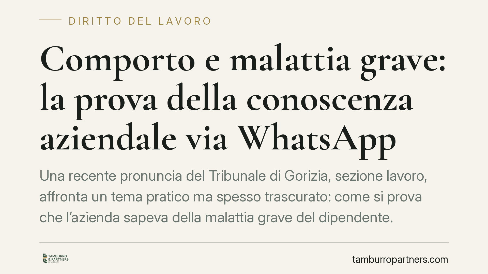
Comporto e malattia grave: la prova della conoscenza aziendale via WhatsApp
Una recente pronuncia del Tribunale di Gorizia, sezione lavoro, affronta un tema pratico ma spesso trascurato: come si prova che l'azienda sapeva della malattia grave del dipendent…
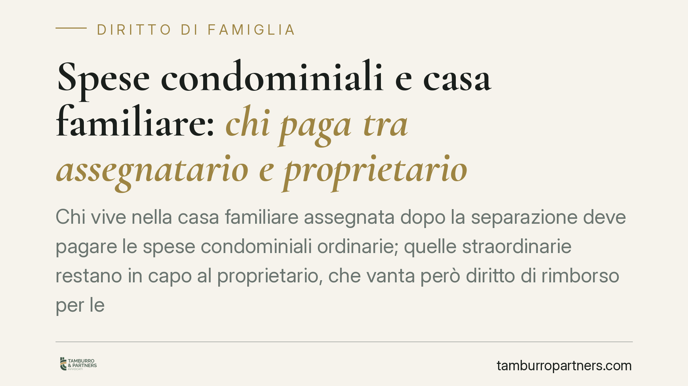
Spese condominiali e casa familiare: chi paga tra assegnatario e proprietario
Chi vive nella casa familiare assegnata dopo la separazione deve pagare le spese condominiali ordinarie; quelle straordinarie restano in capo al proprietario, che vanta però diritt…

Falsa malattia del dipendente pubblico: le responsabilità
Chi simula lo stato di malattia nel pubblico impiego non risponde su un solo fronte. Alla sanzione disciplinare, fino al licenziamento, possono sommarsi l'obbligo di restituire qua…
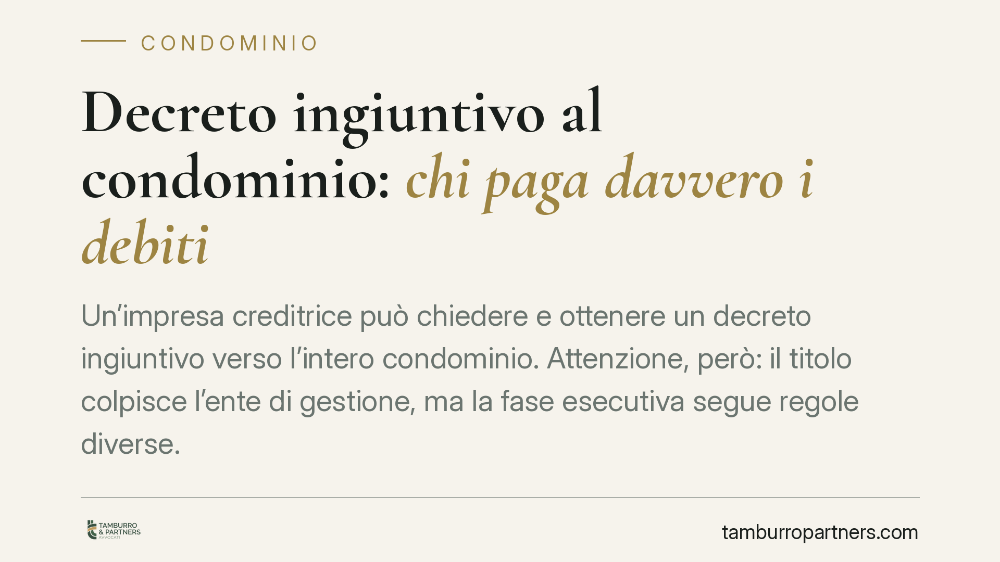
Decreto ingiuntivo al condominio: chi paga davvero i debiti
Un'impresa creditrice può chiedere e ottenere un decreto ingiuntivo verso l'intero condominio. Attenzione, però: il titolo colpisce l'ente di gestione, ma la fase esecutiva segue r…

Pubblicazione dell'esito favorevole del processo: il nuovo art. 144-ter del Codice privacy
Chi esce con esito favorevole da un procedimento penale resta spesso associato, online, alla sola notizia dell'accusa. Il nuovo art. 144-ter del Codice privacy interviene su questo…
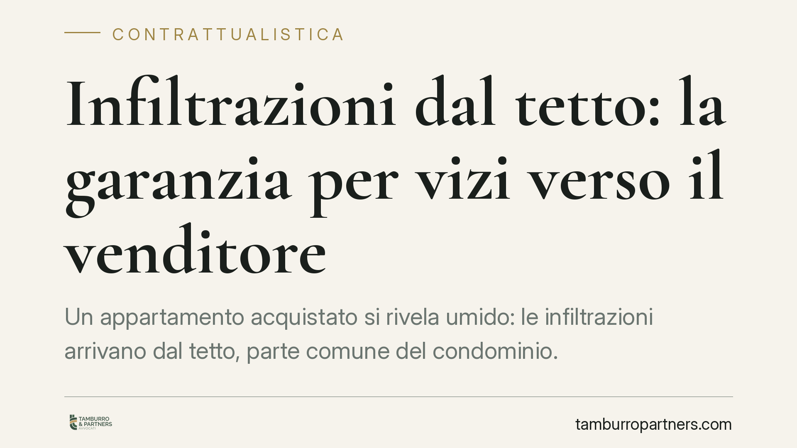
Infiltrazioni dal tetto: la garanzia per vizi verso il venditore
Un appartamento acquistato si rivela umido: le infiltrazioni arrivano dal tetto, parte comune del condominio. Si può agire contro il venditore o bisogna rivolgersi al condominio? L…
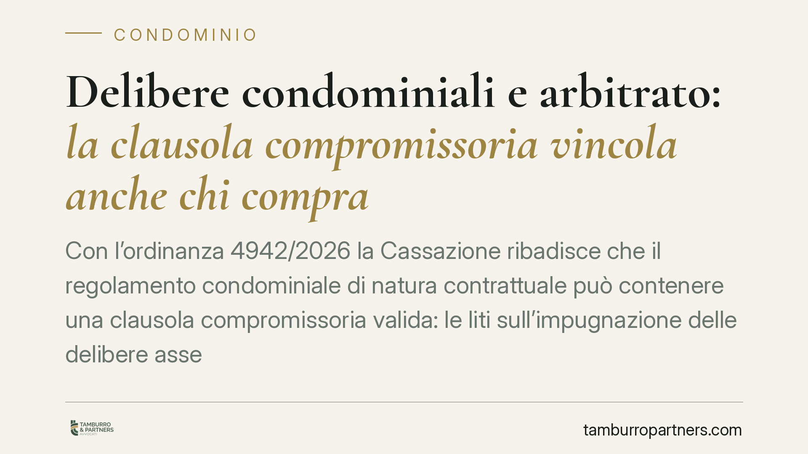
Delibere condominiali e arbitrato: la clausola compromissoria vincola anche chi compra
Con l'ordinanza 4942/2026 la Cassazione ribadisce che il regolamento condominiale di natura contrattuale può contenere una clausola compromissoria valida: le liti sull'impugnazione…
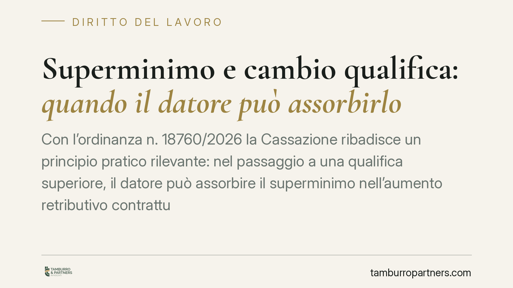
Superminimo e cambio qualifica: quando il datore può assorbirlo
Con l'ordinanza n. 18760/2026 la Cassazione ribadisce un principio pratico rilevante: nel passaggio a una qualifica superiore, il datore può assorbire il superminimo nell'aumento r…

Messa alla prova: quante volte si può chiedere?
La sospensione del procedimento con messa alla prova è una via alternativa al processo per i reati meno gravi. Un nodo ricorrente riguarda la sua reiterabilità: la legge la consent…
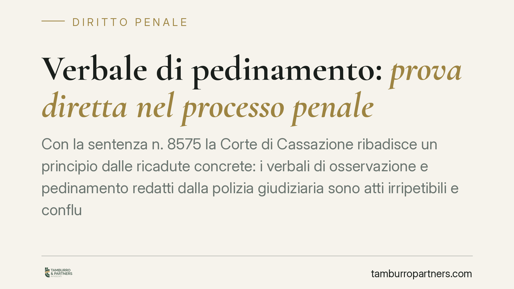
Verbale di pedinamento: prova diretta nel processo penale
Con la sentenza n. 8575 la Corte di Cassazione ribadisce un principio dalle ricadute concrete: i verbali di osservazione e pedinamento redatti dalla polizia giudiziaria sono atti i…

Sopraelevazione abusiva e condono pendente: niente sanatoria
Chi costruisce nuovi volumi su un immobile ancora in attesa di condono rischia di compromettere l'intera opera. Secondo la giurisprudenza penale di legittimità, la sopraelevazione …
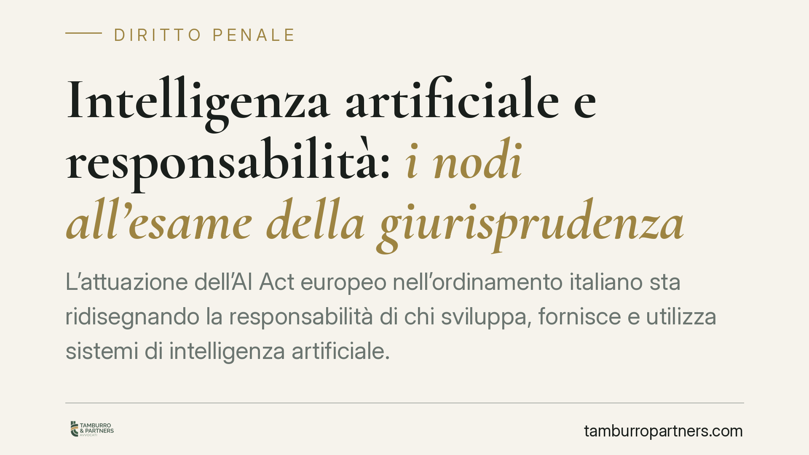
Intelligenza artificiale e responsabilità: i nodi all'esame della giurisprudenza
L'attuazione dell'AI Act europeo nell'ordinamento italiano sta ridisegnando la responsabilità di chi sviluppa, fornisce e utilizza sistemi di intelligenza artificiale. Si profilano…
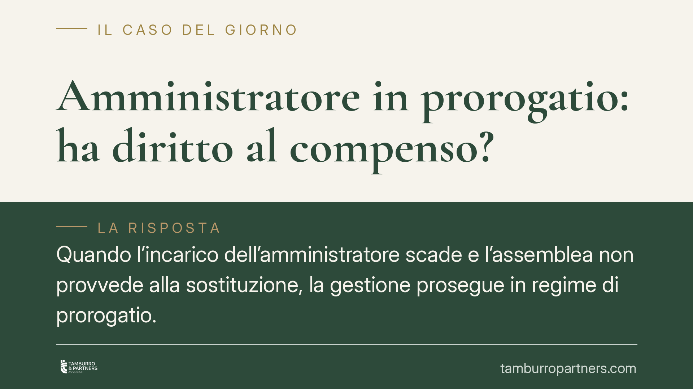
Amministratore in prorogatio: ha diritto al compenso?
Quando l'incarico dell'amministratore scade e l'assemblea non provvede alla sostituzione, la gestione prosegue in regime di prorogatio. Ma per quei mesi spetta un compenso? La giur…
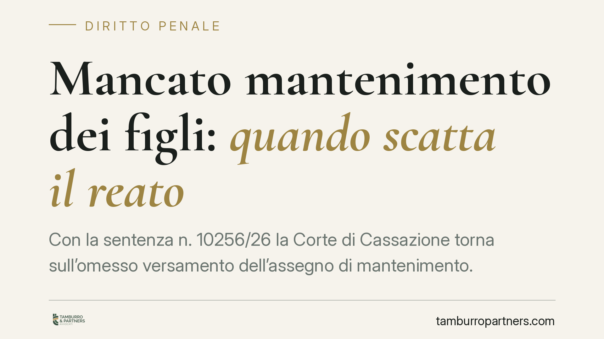
Mancato mantenimento dei figli: quando scatta il reato
Con la sentenza n. 10256/26 la Corte di Cassazione torna sull'omesso versamento dell'assegno di mantenimento. Non basta invocare difficoltà generiche: l'inadempimento costituisce r…

Amministratore di fatto e reati tributari: il concorso secondo la Cassazione
Con la sentenza n. 40501/2026 la Corte di Cassazione torna su un tema ricorrente: chi gestisce di fatto una società, pur senza alcuna nomina formale, può rispondere in concorso per…
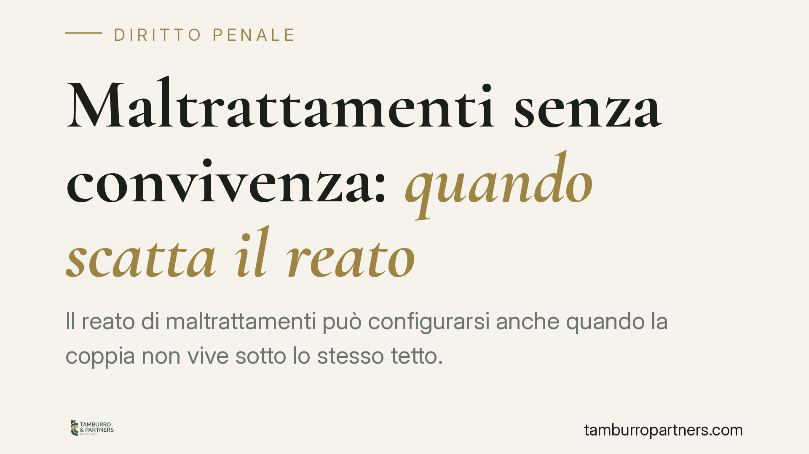
Maltrattamenti senza convivenza: quando scatta il reato
Il reato di maltrattamenti può configurarsi anche quando la coppia non vive sotto lo stesso tetto. Secondo un orientamento della Corte di Cassazione, ciò che rileva è l'esistenza d…

Affitti brevi in condominio: il regolamento può vietarli?
Un condominio chiede al giudice di inibire a una condomina la locazione breve del suo appartamento. Il Tribunale di Roma respinge la domanda: pubblicare annunci e avere ospiti in c…

Amministrazione di sostegno e prodigalità: cosa ha detto la Cassazione
Spendere molto, male o in modo imprudente non basta per subire un amministratore di sostegno. Lo ribadisce la Corte di Cassazione con l'ordinanza n. 5763/2026: senza una reale frag…

Infortunio sul lavoro: quando il rischio si ripete, la colpa non è tenue
La Corte di Cassazione penale esclude la particolare tenuità del fatto a favore del datore di lavoro quando l'infortunio deriva da un rischio ricorrente e dalla formazione carente …
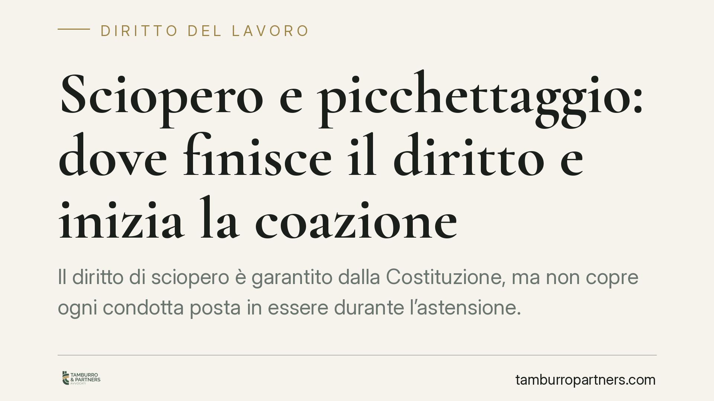
Sciopero e picchettaggio: dove finisce il diritto e inizia la coazione
Il diritto di sciopero è garantito dalla Costituzione, ma non copre ogni condotta posta in essere durante l'astensione. Una recente pronuncia del Tribunale di Cosenza ha confermato…

Abuso dei permessi 104 e lavoratrice in gravidanza: quando scatta il licenziamento
Il divieto di licenziare la lavoratrice in gravidanza non è assoluto. Quando i permessi ex L. 104/1992 vengono utilizzati per finalità diverse dall'assistenza, l'abuso può rilevare…
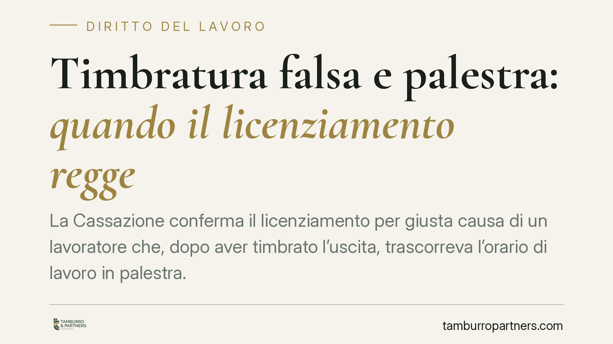
Timbratura falsa e palestra: quando il licenziamento regge
La Cassazione conferma il licenziamento per giusta causa di un lavoratore che, dopo aver timbrato l'uscita, trascorreva l'orario di lavoro in palestra. La pronuncia ribadisce l'ori…
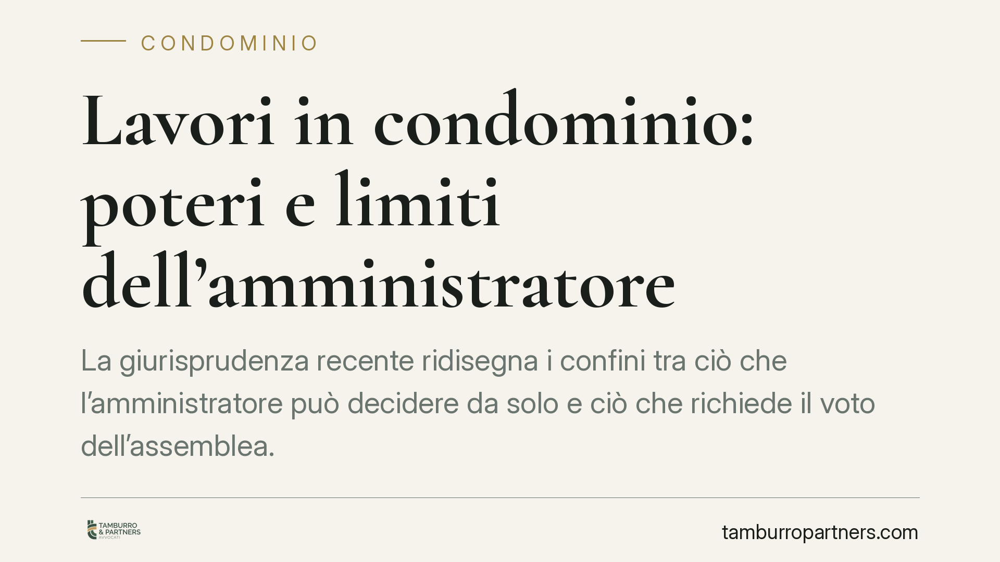
Lavori in condominio: poteri e limiti dell'amministratore
La giurisprudenza recente ridisegna i confini tra ciò che l'amministratore può decidere da solo e ciò che richiede il voto dell'assemblea. La linea di demarcazione corre tra manute…
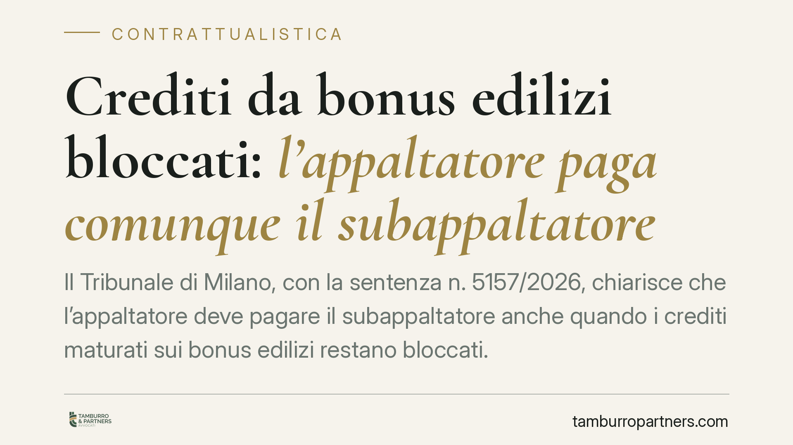
Crediti da bonus edilizi bloccati: l'appaltatore paga comunque il subappaltatore
Il Tribunale di Milano, con la sentenza n. 5157/2026, chiarisce che l'appaltatore deve pagare il subappaltatore anche quando i crediti maturati sui bonus edilizi restano bloccati. …
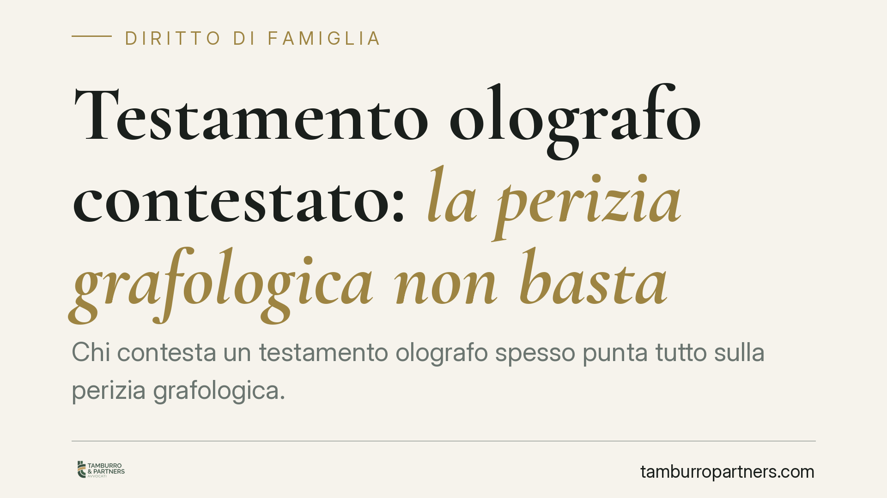
Testamento olografo contestato: la perizia grafologica non basta
Chi contesta un testamento olografo spesso punta tutto sulla perizia grafologica. Un recente orientamento della Cassazione ricorda che la consulenza tecnica non è prova decisiva: i…
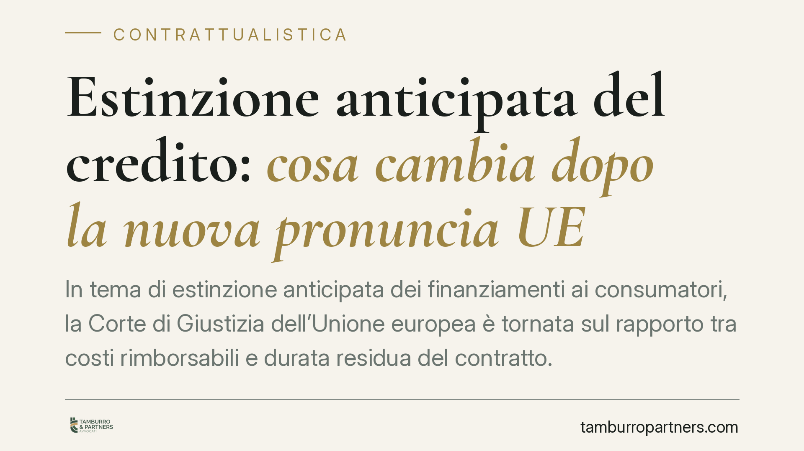
Estinzione anticipata del credito: cosa cambia dopo la nuova pronuncia UE
In tema di estinzione anticipata dei finanziamenti ai consumatori, la Corte di Giustizia dell'Unione europea è tornata sul rapporto tra costi rimborsabili e durata residua del cont…
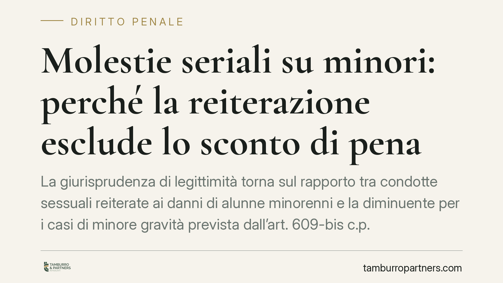
Molestie seriali su minori: perché la reiterazione esclude lo sconto di pena
La giurisprudenza di legittimità torna sul rapporto tra condotte sessuali reiterate ai danni di alunne minorenni e la diminuente per i casi di minore gravità prevista dall'art. 609…
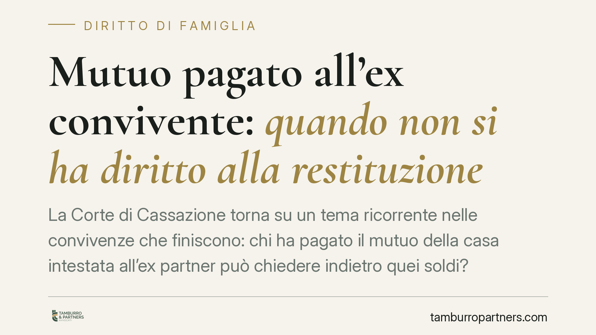
Mutuo pagato all'ex convivente: quando non si ha diritto alla restituzione
La Corte di Cassazione torna su un tema ricorrente nelle convivenze che finiscono: chi ha pagato il mutuo della casa intestata all'ex partner può chiedere indietro quei soldi? La r…

Fondo speciale assente: quando la delibera sui lavori straordinari resta valida
Approvare lavori straordinari senza costituire il fondo speciale preventivo non rende automaticamente nulla la delibera. Lo precisa il Tribunale di Arezzo: il vizio comporta al più…